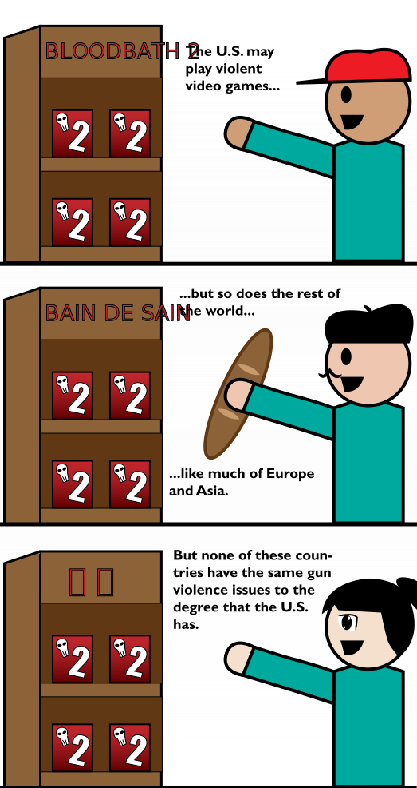

Various studies aside, the link between violent media and real life violence has always been an issue of interest.
But we don't even need to get into thick of that research. In this case, we can just let good old fashion logic answer the question for us...
This also applies to movies and other media. These are viewed around the world. If violent media were the cause of gun violence, why is the U.S. the only country affected?